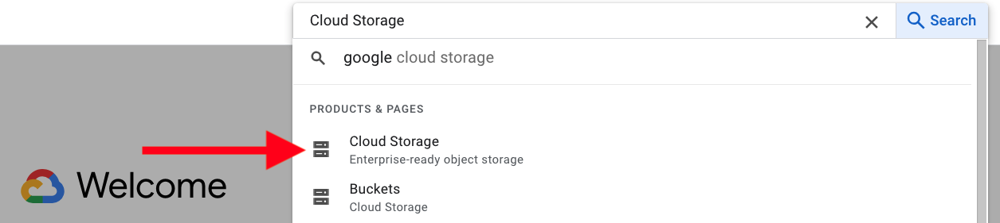
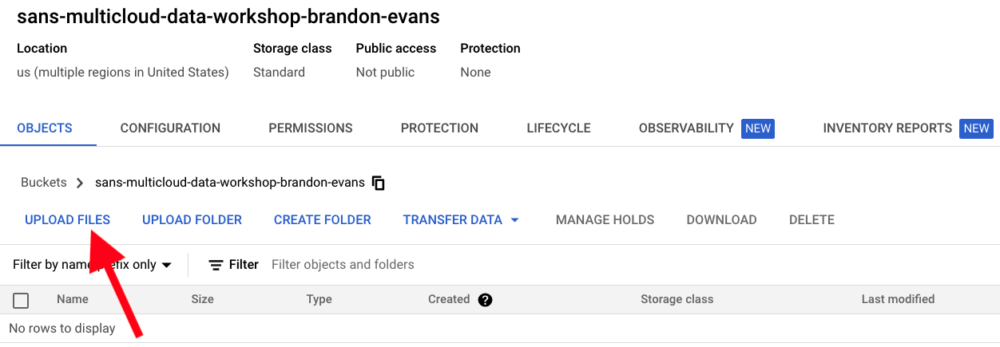
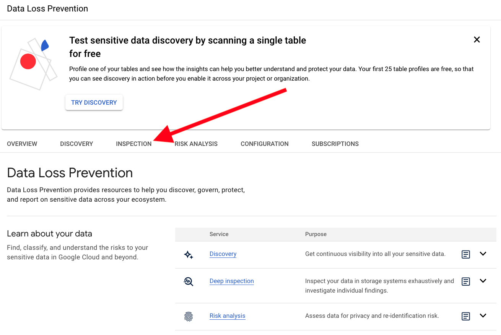

Google Cloud
Initialize a Google Cloud Project
Important
To guarantee that you will not accumulate bills after your free trial concludes, consider shutting down your Google Cloud project at the conclusion of the workshop.
You must not use a cloud account with existing personal or corporate resources. We will be uploading sensitive files that should not be in production environments.
-
Navigate to the GCP Console.
-
Create a new GCP account by pressing the Get started for free button.
-
Enter your Google account's (email address or mobile number), press Next, and complete the sign-in process.
Note
If you do not have a Google account, press the Create Account button to register a new account.

-
You may need to Activate your Google Cloud Platform free trial and accept the Google Cloud Platform Free Trial Terms of Service and fill out the Customer info form to complete the activation process.
Create a Storage Bucket and Upload the Mock Data
-
In the Google Cloud console, type Cloud Storage in the search bar and click the first result:

-
Click Create:
-
Give the bucket a globally unique name, such as sans-multicloud-data-workshop-**YOUR_NAME**. If the resulting bucket name is more than 63 characters, please abbreviate. Then, click Create:
-
Click Confirm:
-
In the newly created bucket, click Upload Files and select the MOCK_DATA*.csv files generated earlier:

Inspect Data with Google Cloud DLP
-
In the Google Cloud console, type DLP in the search bar and click the first result:
-
Click Enable to enable the Cloud Data Loss Prevention (DLP) API:

-
Click Inspection:

-
Click Create Job and Job Triggers:
-
Give the job any name you want (e.g., Test), set the Storage type to Google Cloud Storage, type the name of your storage bucket in the URL field after the
gs://set the Percentage of included objects scanned within the bucket to 100%, and click Create: -
Click Confirm Create:
-
Wait until the Pending status is replaced with Done. If desired, you can move onto another cloud provider in the workshop in the meantime. Then, analyze the results.
We can make a couple of interesting conclusions based on these results:
- Our first two spreadsheets contained 2,000 names (1,000 first names and 1,000 last names), but many more were detected. This indicates that there are some false positives.
- Most critically, Cloud DLP is not flagging ICD-10 Diagnosis Codes as sensitive. While these codes are not considered Personal Health Information (PHI) by itself, coupled with names, this information is highly private.
Refine the Job
Let us create a custom InfoType to detect the ICD-10 Diagnosis Codes in our second spreadsheet.
-
Create a new job with a different name, repeating all of the same steps, but after setting the Percentage of included objects scanned within the bucket to 100%, click Continue:
-
Click Manage InfoTypes:
-
Click Custom, then Add Custom InfoType:
-
Select the Regex expression Type, set the InfoType to ICD-10 Diagnosis Code, and paste the following (Source) into the Regex pattern field:
[A-TV-Z][0-9][0-9AB]\.?[0-9A-TV-Z]{0,4} -
Then, click Done:
-
Click Done again, then click Create and wait for the results. Did you get the results you expected?
Terminate Cloud Resources and Instance
Delete Storage Bucket
In the Google Cloud Console, return to Cloud Storage, check the checkbox next to the bucket used in this workshop, click Delete, and follow the given instructions:
Shut Down Project
To guarantee that you will not accumulate bills after your free trial concludes, consider shutting down your Google Cloud project at the conclusion of the workshop. Alternatively, feel free to keep this account for future testing.
Exploring Further
Google Cloud provides this free demo for Cloud DLP that does not require an active Google Cloud project. Consider giving this a try as well.